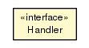

JavaScript is disabled on your browser.
Skip navigation links
Overview
Package
Class
Tree
Deprecated
Index
Help
Prev Class
Next Class
Frames
No Frames
All Classes
Summary:
Nested |
Field |
Constr |
Method
Detail:
Field |
Constr |
Method
sabina
Interface Filter.Handler

All Superinterfaces:
java.util.function.Consumer<
Request
>
Enclosing class:
Filter
public static interface
Filter.Handler
extends java.util.function.Consumer<
Request
>
This is just a "type alias".
Method Summary
Methods inherited from interface java.util.function.Consumer
accept, andThen
Skip navigation links
Overview
Package
Class
Tree
Deprecated
Index
Help
Prev Class
Next Class
Frames
No Frames
All Classes
Summary:
Nested |
Field |
Constr |
Method
Detail:
Field |
Constr |
Method